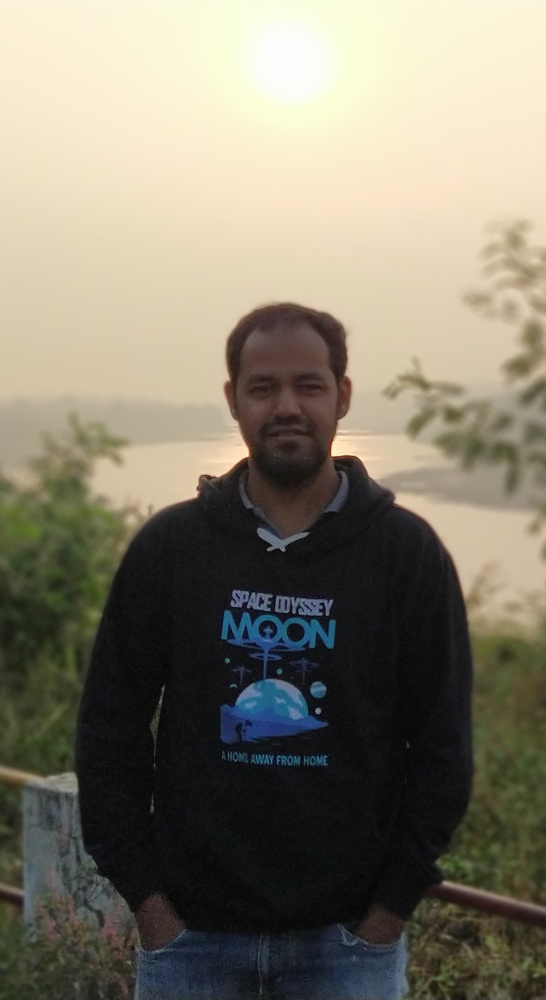

I am a Research Scholar at the Avionics Department, Indian
Institute of Space Science and Technology (IIST), India. My work focus on frequency stability of the power system with grid connected converters. Under the mentorship
of Prof. Rajesh Joseph Abraham. Prior to joining IIST,
I completed my post graduate from Visvesvaraya National Institute of Technology, India, in 2017 under the
guidance of
Prof. M.A. Chaudhari. I
pursued my bachelors degrees from Jabalpur Engineering College.
respectively.
--
Room #207, Chitra Hostel
IIST Valiyamala
Thiruvananthapuram, Kerala, India